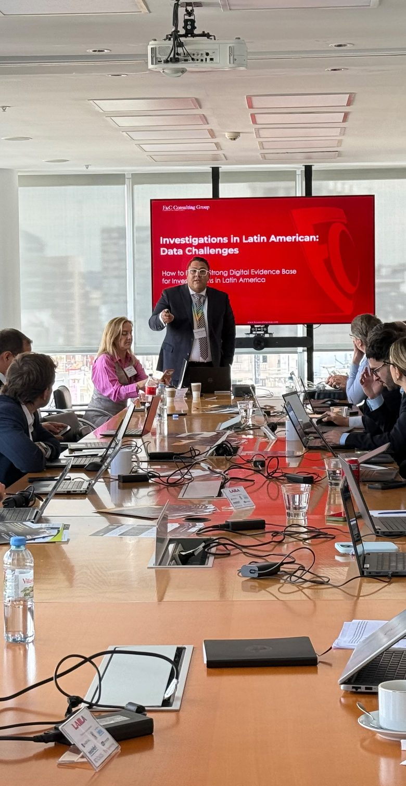
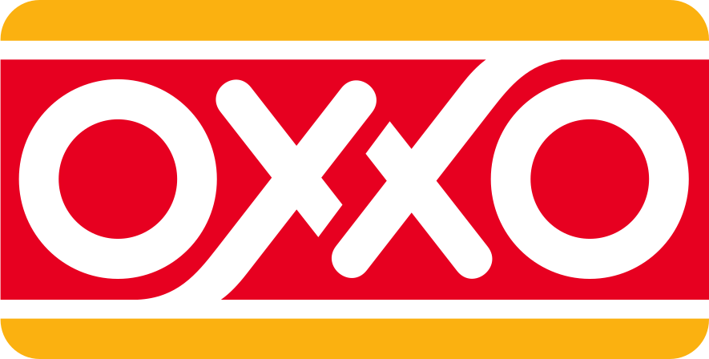
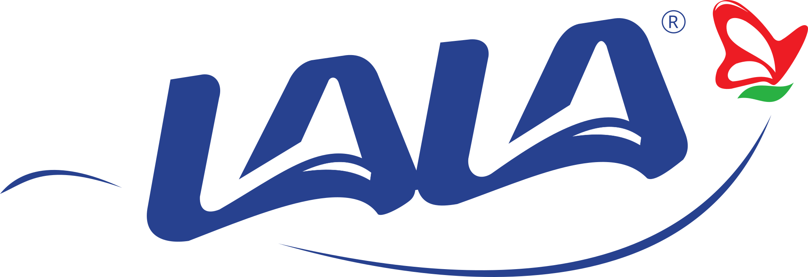
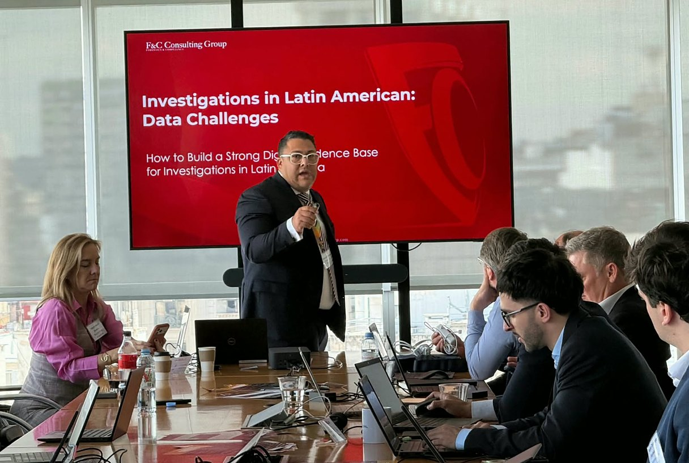

Crece entre países
con respaldo estratégico
Respaldo estratégico para el crecimiento transfronterizo entre Estados Unidos, México y América Latina, con compliance y gestión de terceros.






¿Vas a otro país? Llega sin riesgos ocultos
Hacer negocios en Estados Unidos o México exige cumplir reglas distintas.
Te acompañamos con compliance, FCPA y validación de terceros para crecer entre países sin fracasar en el intento.
F&C es tu aliado para decidir con certeza
Trabajamos como una extensión de tu equipo, con especialistas que atienden directamente cada caso, en Estados Unidos, México y América Latina.
Un servicio completo, de principio a fin
Cada entregable responde a una pregunta concreta de tu organización: qué pasó, qué riesgo existe y qué decisión tomar.
Obligaciones del país destino.
Prevención de corrupción transnacional.
Validación de socios y distribuidores.
Antecedentes antes de firmar.
Mapa de riesgos de la expansión.
Reglas para la nueva operación.
Respuesta ante irregularidades.
Equipos preparados en cada país.
Respaldo en cada mercado
Oficina en San Antonio, Texas.
Oficina en la Ciudad de México.
Especialistas en la región.
Riesgo de corrupción transnacional.
Terceros validados.
Programas para la nueva operación.
- Estados Unidos
- México
- América Latina
Experiencia en ambos lados de la frontera
F&C Consulting Group fue patrocinador de SelectUSA Mexico Conference.
Del plan a la operación
Respaldo en cada etapa de la expansión.
Plan
Objetivos y mercados.
Riesgos
Compliance, FCPA y terceros.
Terceros
Validación de socios locales.
Políticas
Reglas para la nueva operación.
Acompañamiento
Soporte durante el arranque.
“El enfoque de F&C nos ayudó a visualizar brechas que no habíamos detectado. Trabajo de primer nivel y personalizado.”VP de Recursos Humanos, empresa de servicios multinacional Servicio relacionadoF&C Academy: Certificaciones PECB y cursos

Crece sin riesgos ocultos
Revisamos los riesgos de tu expansión.
Riesgos que suelen ir de la mano
Preguntas frecuentes
Estados Unidos, México y América Latina, con oficinas en San Antonio, Texas, y en la Ciudad de México.
Sí. Contamos con una guía FCPA en español e inglés y alineamos programas anticorrupción a sus exigencias.
Sí, con background check e inteligencia reputacional de terceros.
En investigaciones sensibles la independencia es clave para obtener claridad, objetividad y evidencia defendible. Un equipo interno frecuentemente carece de distancia y puede estar expuesto a presiones que comprometan los resultados.
Trabajamos bajo protocolos estrictos de mínima exposición y control de información sensible. Todos los procesos están diseñados para proteger a las personas involucradas y la reputación de la organización.
Sí. Además de investigar, implementamos controles y estrategias de prevención para reducir riesgos futuros, y contamos con programas de capacitación especializados para fortalecer la cultura de cumplimiento a través de F&C Academy.
Sí. Contamos con experiencia internacional y atendemos organizaciones en Estados Unidos, México y América Latina.
Sí. Actuamos como un aliado técnico que proporciona evidencia forense, análisis de datos y peritajes especializados para robustecer la postura legal y la toma de decisiones en litigios laborales, penales o corporativos.
Brindamos respaldo estratégico a organizaciones, consejos de administración, fondos de inversión y firmas legales que buscan mitigar riesgos, proteger su reputación y fundamentar decisiones críticas con evidencia técnica.
A través de F&C Academy ofrecemos programas de formación y certificaciones internacionales diseñados para fortalecer el control interno de las organizaciones y el desarrollo especializado de profesionales.